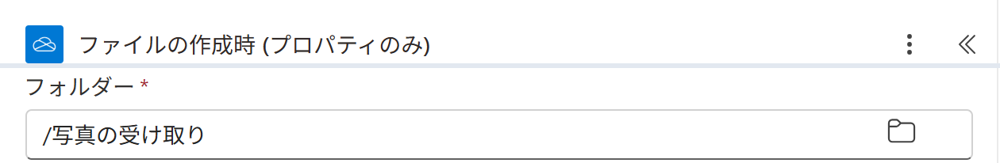
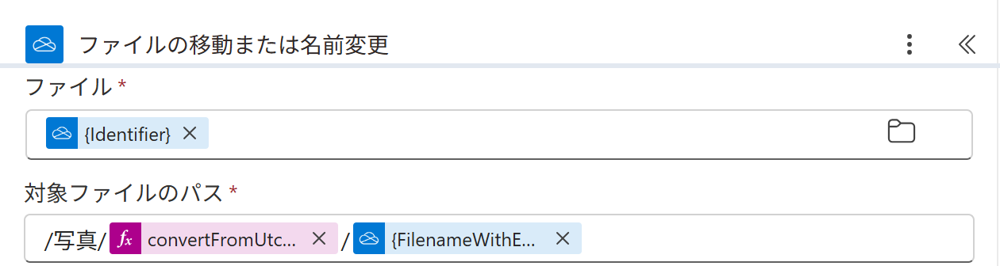

Vol.153-4
要の設定は移動先のパスの1か所

対象ファイルのパスに /写真/年月/ファイル名 と組みます。
年月の部分を式にすると、毎月のフォルダー作りが要らなくなります
年月の部分を式にすると、毎月のフォルダー作りが要らなくなります
ファイルの作成時 (プロパティのみ)実画面

A
A
フォルダーは /写真の受け取り。右のフォルダーのアイコンから選ぶ
A
ここに入ったファイルだけが対象になる
ファイルの移動または名前変更実画面

B
C
B
ファイルはトリガーの {Identifier}
C
/写真/ 式 / ファイル名。式は convertFromUtc(triggerBody()?['{CreatedDate}'],'Tokyo Standard Time','yyyy-MM')同じ形で請求書の PDF を受け取った月のフォルダーへ片付けることもできる
出典：Microsoft Learn